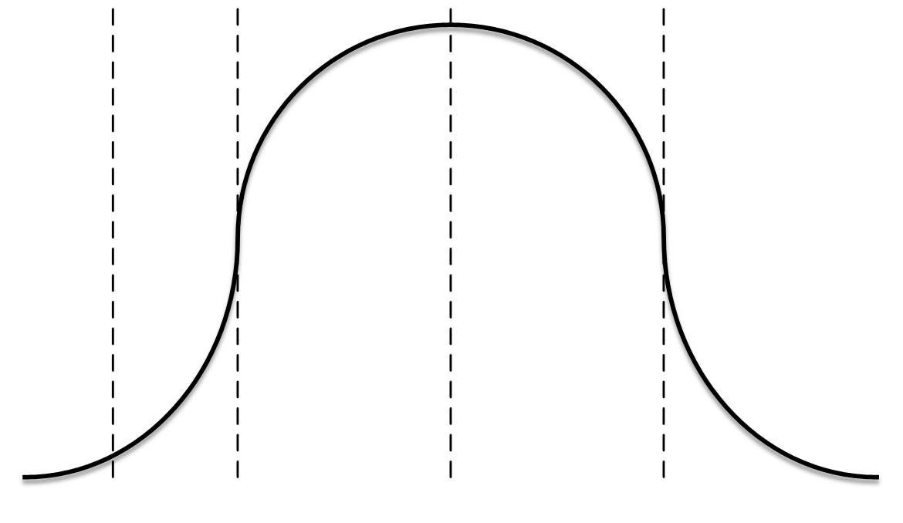
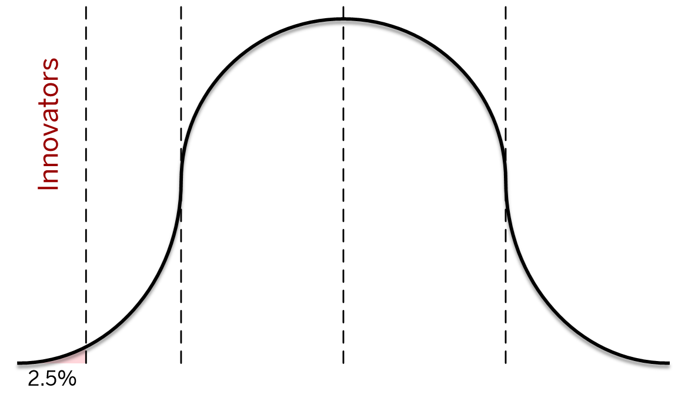
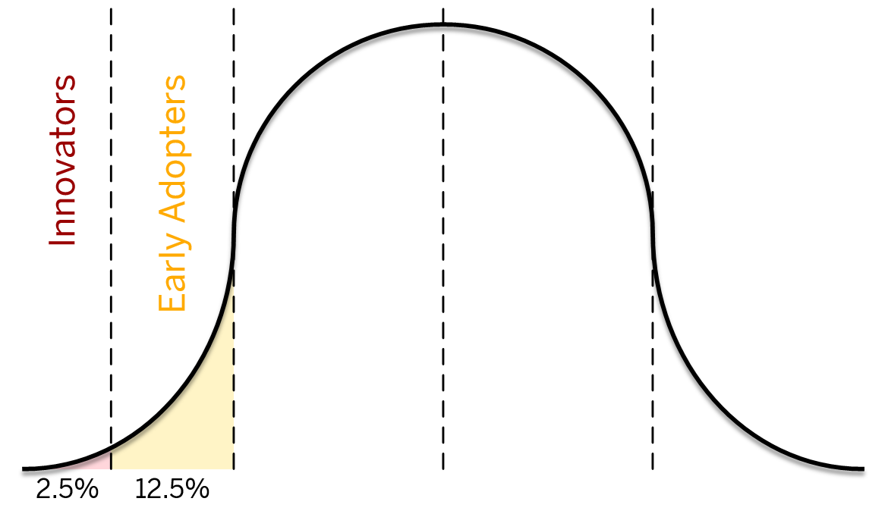
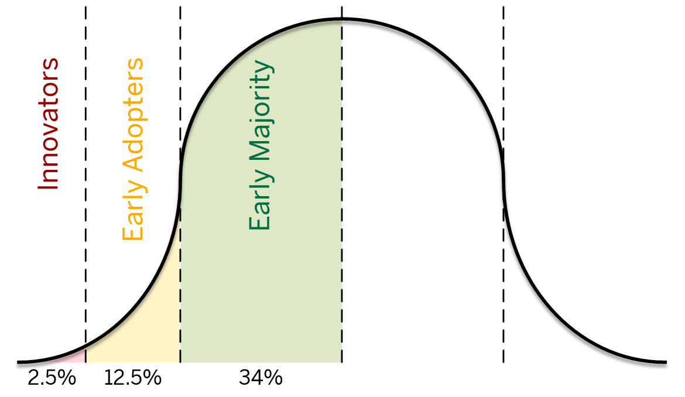
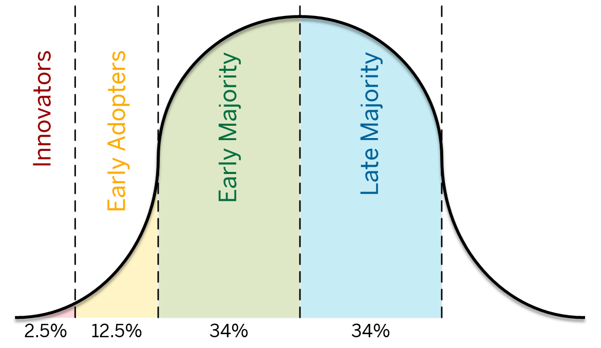
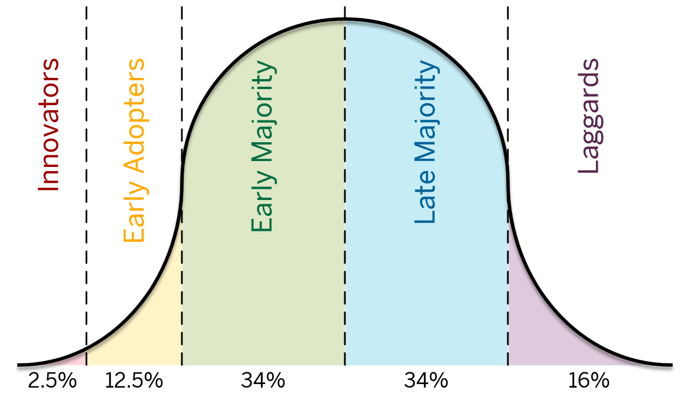
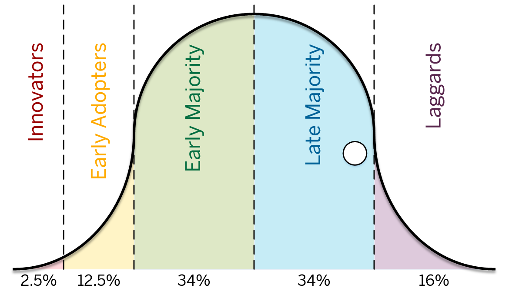
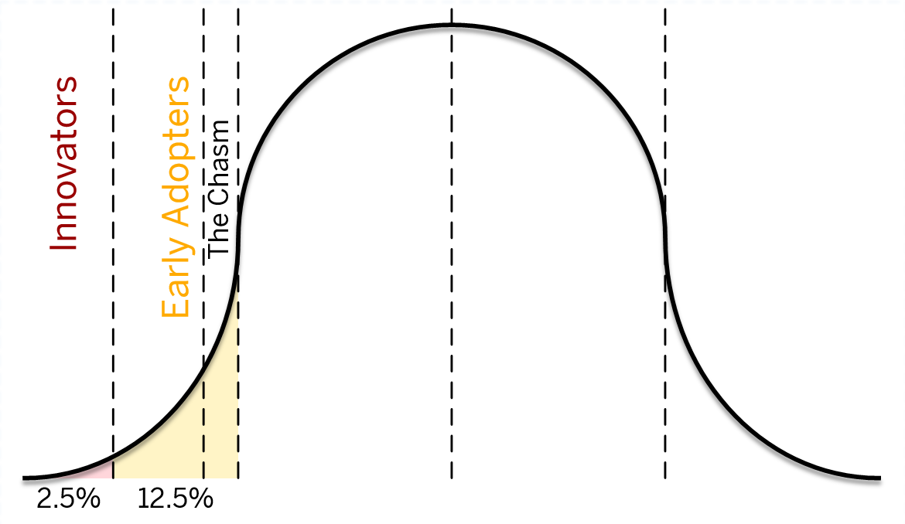

To create a community that provides the expertise, support, and resources necessary to enable groups at IU to effectively leverage cloud technologies for enterprise, research, and teaching & learning use cases.
Create a Cloud Center of Excellence







